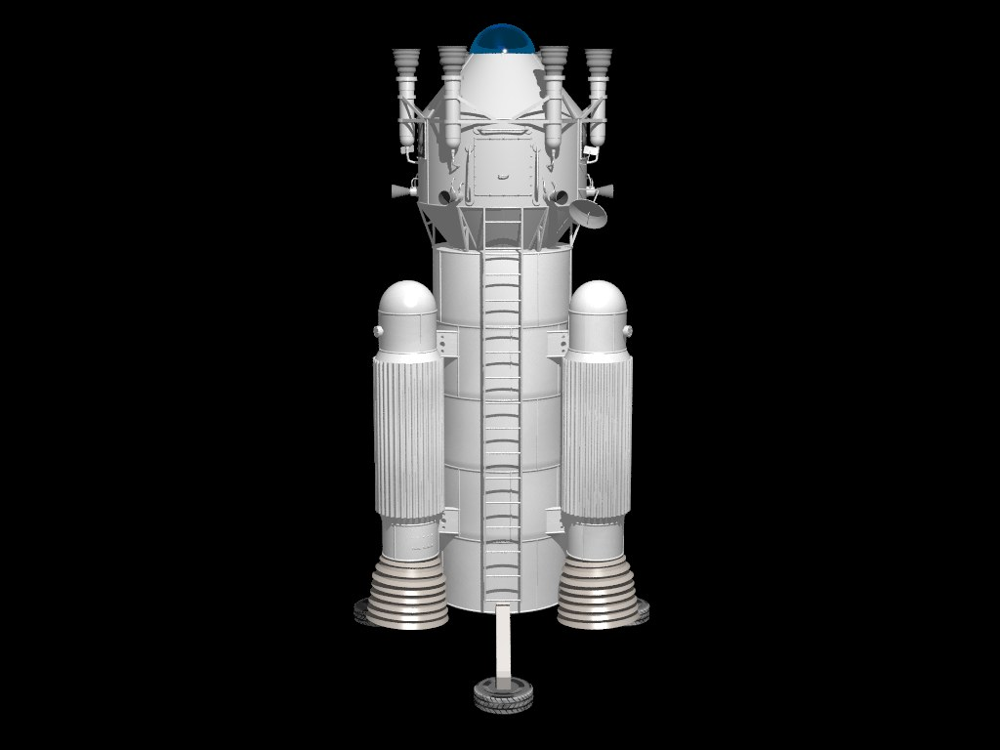
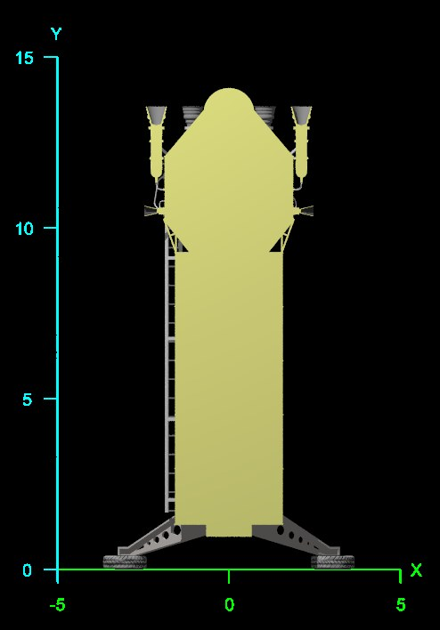
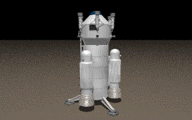

Overview
This model was created by George Leonberger in Moray. He has given his permission for it to be converted to a POV-Ray include file and released under the terms of the CC-LGPL to enable you to use, modify and redistribute it for both commercial and non-commercial purposes. You can help improve the model by submitting enhanced versions back into the collection by registering yourself on the web site. This download consists of:
- an include file containing the Vulture Space Rocket model
- an include file containing the textures used in the model
- various gif and tga images used to apply textures and logos to specific elements of the model
- a sample scene file to illustrate the use of the include file
- the original Moray model file
- a copy of this documentation and the image files used in it
- a few other files that you may find handy if you submit a new version to the collection
The 1979 US TV series, Salvage 1 starts with a salvage man intent on recovering the hardware left on the moon during the Apollo missions. He assembles the Vulture rocket from materials at hand and recruits a small crew. Having accomplished this mission in the pilot episode the crew set off on a variety of space adventures.
You can add this Vulture Rocket to your scene file by including the "vulture.inc" file.
light_source { <-15,50,-15>, rgb 1}
camera {location <-23, 10,-10> look_at 3*y}
#include "vulture.inc"
The file returns a single object centred at the origin and standing on the plane Y=0. The Rocket is about 14 POV-Ray units in height.
You can wrap it in an object statement and transform it as required to fit into your scene. For example:
light_source { <-15,50,-15>, rgb 1}
camera {location <-23, 10,-10> look_at 3*y}
object {
#include "vulture.inc"
scale 0.5
rotate <0,30,0>
translate <5,0,3>
}
The following images show the Vulture in space and in section.


Change History
The initial Vulture Rocket model was created by George Leonberger using Moray. He made it available for download from Geocities until the web server service closed in October 2009, at which point he kindly gave his permission for it to be redistributed on the POV-Ray Object Collection license (CC-LGPL).
Version 1.0 of the include file was adapted to conform to the naming conventions for the POV-Ray Object Collection by Chris Bartlett in September 2009. All identifiers are now prefixed with 'Vulture_' and all file names start with 'vulture'. The following additional changes were made:
- The model was centred over the origin to make it easier to orient, move around and resize.
- A POV-Ray scene file was added to illustrate the use of the model.
- Various settings were changed to make the model compatible with POV_Ray 3.7.

Return to Table of Contents